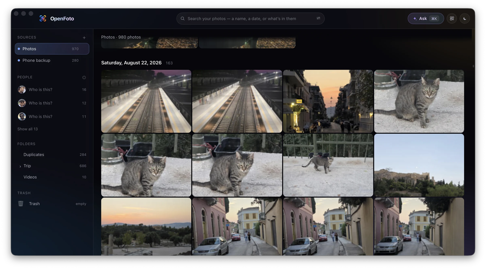
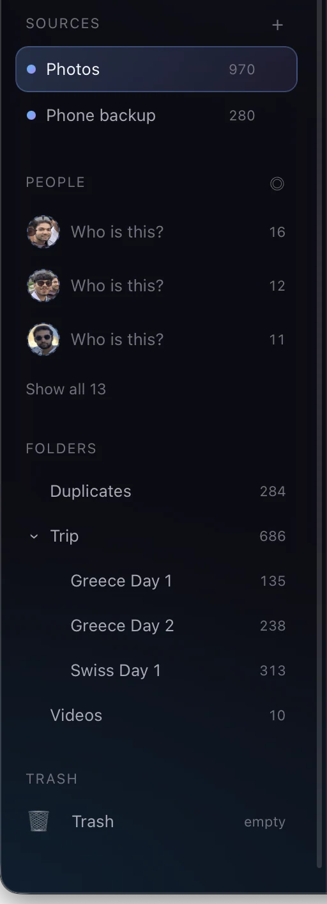
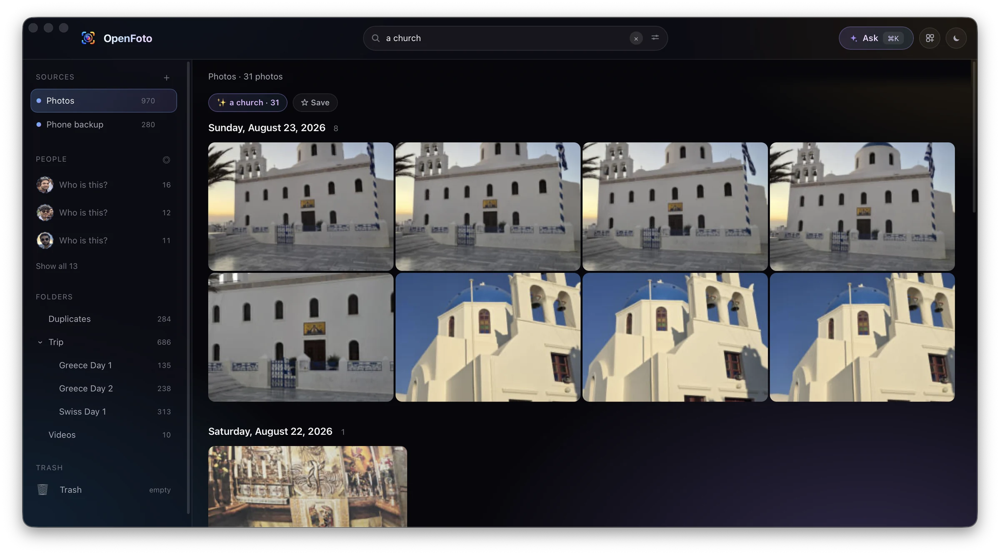
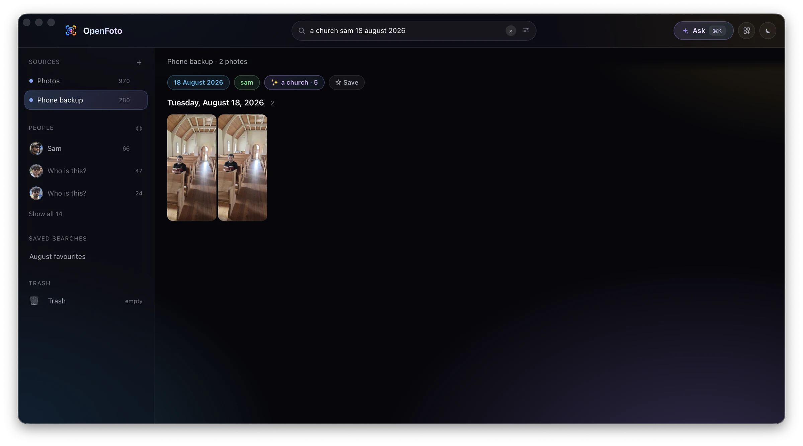
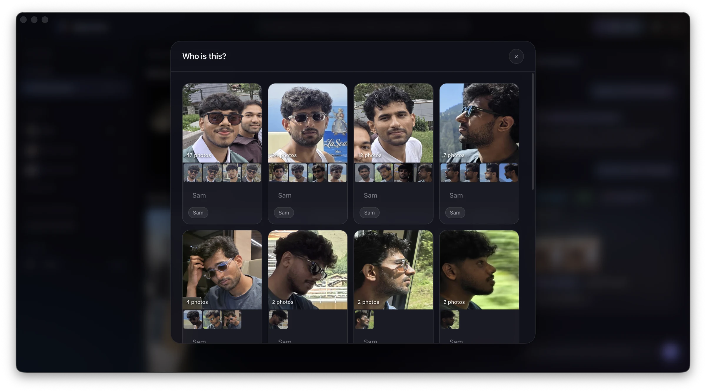
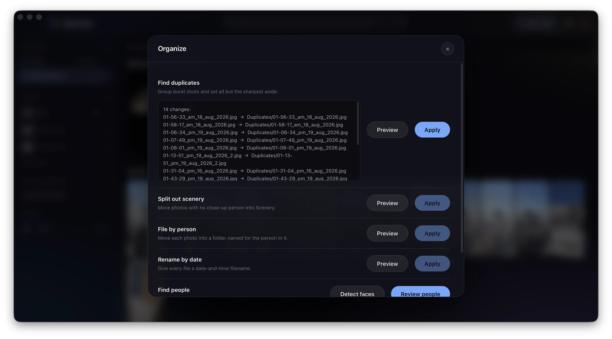
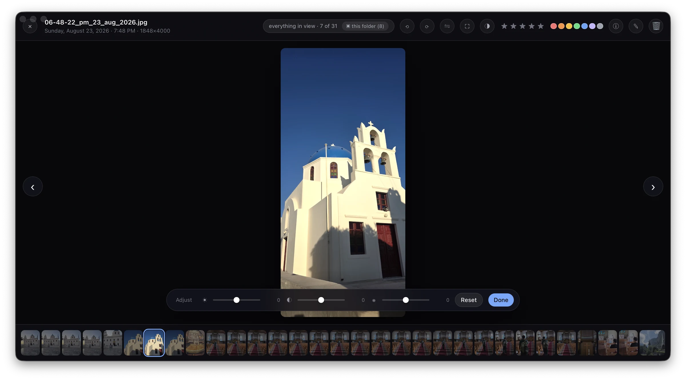
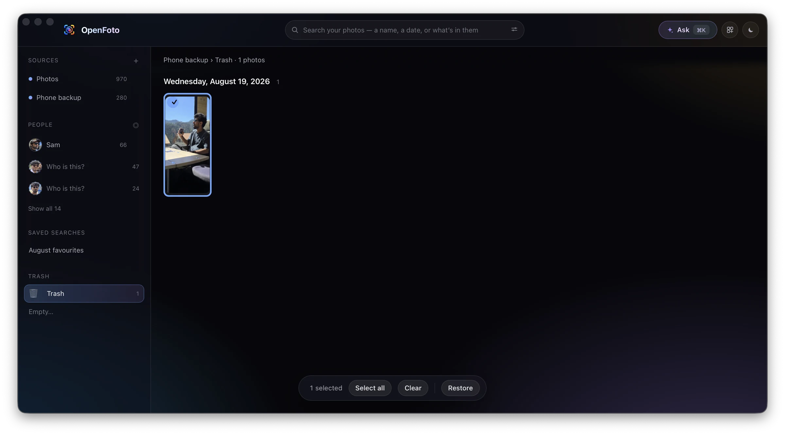

macOS · Windows · Linux — free, and free of charge, permanently
The problem nobody will fix
You have a hard drive. On it, a folder called Trip, and inside it Greece Day 1, Greece Day 2, Swiss Day 1. You made those folders. You know exactly what's in them.
Now try to look at them.
Apple — a company worth more than most countries' economies — ships an operating system whose photo app cannot do this. Photos wants to import your pictures into a library it controls, in a location it chooses, under a structure it invents. Your folders are not welcome. You can point Finder at the folder and press space, which is a file previewer wearing a photo app's coat: no faces, no search, no dates, no grid worth the name.
So you look elsewhere, and the market splits neatly in three.
The free ones that aren't
They install cheerfully. Then face recognition is a subscription. Then export is Pro. Then a modal appears every third launch, warmly explaining that your memories deserve better, for £39.99 a year. Your photos have become a recurring revenue line on someone's dashboard.
The genuinely free ones that look it
Some are magnificent — decades of engineering, given away by people who owed you nothing. And they were designed when Windows XP was current. Nested toolbars. Nine-step import wizards. A simple thing made to feel like filing a tax return.
The self-hosted ones
Genuinely good — and they want a Docker daemon, a Postgres container, a reverse proxy, and a mental model where photos live inside a server. Wonderful, if you wanted to run a server. You wanted to look at your holiday.
Every one of them, free or paid, old or new, makes the same move: it takes your photos and puts them somewhere it owns.
The folders are the database
What Obsidian is to Markdown, OpenFoto is to your photo library.
Not a metaphor. There is no library file, no import step, no proprietary container. Point OpenFoto at a folder and it reads what's there. Rename a folder in Finder mid-session and it keeps up, because photos are tracked by content hash, not by path.
Delete OpenFoto tomorrow and you lose nothing. Your folders sit exactly where they were, named exactly what you named them — plus a small readable openfoto.json beside each one holding the ratings and names you added, because those were yours and no machine can reproduce them.
Everything else — thumbnails, the index, face embeddings — lives in a .openfoto/ folder that is safe to delete. Delete it and it rebuilds. That isn't a caveat; it's the promise the whole design is built to keep.

The file is human-readable, so here it is — this is the whole database schema:
{
"photos": {
"01-15-03_pm_18_aug_2026.jpg": { "rating": 5, "label": "red" }
},
"searches": [
{ "name": "August favourites", "query": "5stars august" }
]
}
What it actually does
Every claim below is a screenshot of the software doing it, with the limitation stated as plainly as the feature.

Scene search
It reads the pixels, not the filenames.
Type a church and get the church. snowy mountains and get the mountains. A vision model reads the photograph; no tagging, no training, nothing uploaded.
Ask for the sea in a library with no sea and it returns nothing, on purpose. Below the confidence threshold it would rather say nothing than guess.

Sentences
One sentence is three filters.
a church sam 18 august 2026 is a scene, a person and a date, and gives you two photographs. Chips under the field show how the query was read, so a search that matches nothing is never a black box.
Not a language model — a grammar. It is faster, works offline, and never invents a folder that doesn't exist; the honest limit is phrasing coverage, and an unknown wording fails rather than being guessed at.
The Ask panel
Ask, and tell.
✨ or ⌘K opens a thread over the same command grammar: questions get intent chips, faces, thumbnails and one-tap actions; instructions get a preview and wait. When nothing matches, it says so in words.
The thread is per-session and nothing is persisted. It composes only the commands you could have typed yourself — there is no model in the loop to confabulate with.

People
It admits when it doesn't know.
Detection and recognition run on your machine; nothing is uploaded. Name someone once and OpenFoto files the rest — and when it isn't sure, it says so and leaves the photo alone.
A confidently wrong answer is worse than an honest shrug. Review teaches identities; filing photos into per-person folders is still to come.
Organize
It asks first.
move all my august photos to Trip/Greece Day3 shows exactly what will happen, then waits. Every change is journalled, and ⌘Z undoes the file move and the ratings that travelled with it.
An empty selector is refused — move to Trip does not quietly inherit whatever was last on screen. Nothing acts without a preview, including delete.

Duplicates
The duplicates you actually have.
Burst shots, three seconds apart. Perceptual hashing finds the candidates, real pixel comparison confirms them, and all but the sharpest are set aside — previewed first, like everything else.
A hash match is a candidate, never a conclusion, and clustering is complete-linkage: a chain of vaguely-similar photos is not a pile of duplicates. The candidate scan is O(n²) — fine past ten thousand photos; a hundred thousand will want a smarter index.

Editing
Non-destructive you can see.
Crop, straighten, rotate, exposure. Nothing is written until Save, and the original moves to a visible Originals/ folder — because "non-destructive" should mean you can see the thing that wasn't destroyed.
That is the whole toolkit. No curves, no healing brush, no AI erase — the editor is honest about being small.

Deleting
Even delete is just a move.
Deleted photos go to a Trash/ folder inside the library, not the system bin — so it is journalled and undoable like every other operation. The sidebar keeps the count, and Restore puts them back where they were.
Emptying it hands the files to the system Trash, and that is the one step OpenFoto cannot undo — which is exactly why it is a separate button that asks first.
Speed
photos laid out, with about 55 cells alive in the DOM
camera-embedded preview read, instead of a twelve-megapixel decode
decode per photo for the thumbnail, the faces and the search index together
What you keep
Your library is a folder. Your metadata is a file you can read.
Ratings, labels and saved searches live in openfoto.json; names live in openfoto-people.json. They sit at the library root — or in any folder, where the nearest one wins, so copying a folder in Finder carries its ratings with it. Delete the .openfoto/ cache and nothing you authored is lost; there is a test that writes a name and a rating, deletes the cache outright, and asserts both survive.
Even deleting is reversible: photos go to a Trash/ folder inside the library, journalled and undoable like every other operation.
What it deliberately doesn't do
No cloud, no account, no sync.
There is nowhere to sign in.
No telemetry.
Nothing is measured, collected or sent. There is no analytics code to audit because there is none to write.
No paid tier.
There is no feature behind a wall, because there is no wall.
No library format.
If OpenFoto vanished tomorrow, your folders wouldn't notice.
Take it
Grab the installer for your platform from Releases — macOS (.dmg, Apple Silicon), Windows (.msi), Linux (.AppImage and .deb, glibc 2.38+).
The app is signed, but not notarized, so the first launch needs a nudge: on macOS, right-click → Open; on Windows, More info → Run anyway. An Apple Developer ID costs money that a project with no revenue doesn't have.
No Intel Mac build: ONNX Runtime stopped publishing a macOS x64 binary, so an Intel machine would need it compiled from source.
Face recognition and scene search are optional. They need about 200 MB of models, downloaded on first use, each checked against a pinned SHA-256 before it's installed. Skip it and everything else still works.
Or start from the command line — everything the app does, the CLI does, and it's the honest way to try this on a library you care about:
# index a folder; never modifies a photograph openfoto scan -C ~/Photos # thumbnails, faces and scene search, one decode each openfoto analyze -C ~/Photos # search by what a photograph shows openfoto find -C ~/Photos "a night sky" # find burst duplicates — previews before it moves anything openfoto dedupe -C ~/Photos # reverse any of it openfoto undo -C ~/Photos